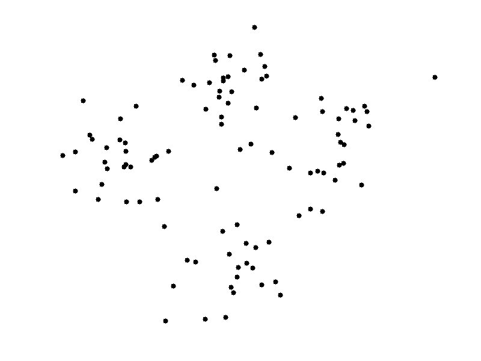

Artificial Neural Networks
Research Project Component
Go To:
Introduction
|
It was once said, “Machine Intelligence is the last invention that humanity will ever need to make”. Machine learning is an application of artificial intelligence that provides a system with the ability to learn and improve from experience without being explicitly programmed. It involves developing computer programs that can access data and then use it to learn themselves. This technology could be implemented in image and speech recognition, self driving cars, product recommendations, and traffic predictions. The aim of machine learning is to allow the computers to learn automatically without human intervention or assistance and adjust actions accordingly, which is very significant as it will increase efficiency and effectiveness when completing rote tasks which are currently done by humans. One machine learning algorithm which is based on the model of a human neuron is called an Artificial Neural Network. |
This course is excellent to learn more about Artificial Intelligence, and visit this website for more information concerning the machine learning application of AI.
Artificial Neural Networks
A brain and a computer are vastly different; they “think” in completely different ways. The transistors in a computer are wired in simple, serial chains ( one is connected to two or three others in basic arrangements; called logic gates), whereas the neurons in a brain are interconnected in complex, parallel ways (each one is connected to perhaps 10,000 of its neighbors). An artificial neural network, also known as an ANN, is a biologically inspired computational network. This technology is based on studies of the brain and nervous systems, to simulate their activity by emulating a simplified natural neural network. Essentially, they mimic how a brain learns. They are excellent tools for finding patterns which are far too complex or numerous for a human programmer to extract and teach the machine to recognize. An ANN is made up of processing units, which consist of inputs and outputs. The inputs are what the ANN learns from to produce the desired output. This will be explained more in depth in the next section of this webpage.

The significant tasks that artificial neural networks perform are:
- Classification: NNs organize patterns or datasets into predefined classes
- Prediction: They produce the expected output from given input.
- Clustering: They identify a unique feature of the data and classify it without any knowledge of prior data.
- Associating: You can train neural networks to "remember" patterns. When you show an unfamiliar version of a pattern, the network associates it with the most comparable version in its memory and reverts to the latter.
How They Work
|
A neural network has anything from a few dozen to even millions of artificial neurons called units arranged in a series of layers, each of which connects to the layers on either side. Input units are designed to receive various forms of information from the outside world that the network will attempt to learn about, recognize, or process. Other units sit on the opposite side of the network and signal how it responds to the information it's learned; those are known as output units. In between the input units and output units are one or more layers of hidden units, which, together, form the majority of the network. |
To start, the most basic explanation for an ANN is as follows. An input gets registered into the network. Then, various layers identify and analyze the input. When the input has reached the fourth or fifth layer, the network would have created complex feature detectors. Then researchers will put labels on the input to guide the artificial neural networks. This feedback is called backpropagation; comparing the output a network produces with the output it was meant to produce, and using the difference between them to modify the weights of the connections between the units in the network. After a certain amount of times, the network will be able to carry out the task without human guidance, so an entirely new set of inputs could be presented and outputs to a certain level of accuracy, based on the algorithm, will be produced.
Types of Neural Networks
There are a wide variety of artificial neural networks, which are essentially different computational models. These networks are created based on mathematical operations and parameters to determine an output. The following are the 6 most signifiant artificial neural networks which are implemented in machine learning.
| Type | Description | Image |
|---|---|---|
| Feedforward Neural Network – Artificial Neuron | This is the simplest form of an ANN, in which the data or input flows in one direction. The data passes through the input nodes and exit on the output nodes. The image displays a single layer feedforward neural network, where the sum of the products of inputs and weights are calculated and fed to the output. FNNs could have multiple layers too. | |
| Radial basis function Neural Network | RBF networks are distinguished from other neural networks due to their universal approximation and faster learning speed. They have two layers; the inner layer where the features are combined with the Radial Basis Function, and then the next layer where output of the first features are taken into consideration to compute the next output. |  |
| Kohonen Self Organizing Neural Network | Kohonen's networks are one of basic types of self-organizing neural networks. The ability to self-organize provides new possibilities - adaptation to formerly unknown input data. The objective of a Kohonen map is to result in a to discrete map comprised of neurons when vectors of arbitrary dimension are inputted. The map needs to be trained to create its own organization of the training data. This network is used to recognize patterns in data. |  |
| Recurrent Neural Network(RNN) – Long Short Term Memory | RNN works on the principle of saving the output of a layer and feeding this back to the input to help in predicting the outcome of the layer the next time. This makes each neuron act like a memory cell in performing computations. | |
| Convolutional Neural Network | Convolutional neural networks are similar to feed forward neural networks, where the neurons have learnable weights and biases. It is applied in signal and image processing. The input features are taken in batch-wise like a filter. Once we have this, the changes in the pixel value will help to detect the edges and images can be classified into different categories. |  |
| Modular Neural Network | A MNN has many of different networks working independently and contributing towards the output. Each neural network has a set of inputs that are unique compared to other networks which are simultaneously performing sub-tasks. These networks do not interact. This network is advantageous as it breaks down the computational process, and therefore, reduces complexity. |
Applications of Neural Networks
As the use of artificial neural networks is still fairly new, and it hasn't been implemented in many fields to this date, the possibilities of applications of these algorithms are infinite. As more research and testing is done and the skills required to successfully use artificial neural networks are learned, this technology will definitely be implemented into further applications. Following are some significant applications of artificial neural networks.
- Automotive Industry
- Entertainment
- Finance and Insurance
- Natural Language Processing
- Medical, Oil and Gas, Aerospace, Security, Telecommunications, Transportation, Environment, and many more.
Neural networks are being heavily utilized in the development of autonomous vehicles, which depend on analytic and predictive capabilities for success and safety. Deep Neural Networks are key in any autonomous vehicle as they collect the input data from sensors, process, and then produce the correct behaviour for the vehicle. Recurrent and convolutional networks are specifically used for this purpose. As issue in this regard is the lack of ethical decision making, as a computer does not possess that.
Neural networks are used in search engines, as of 2016, Google had 30-40 layers in their network in order to provide the best search results and user experience. Neural networks are used to deliver the most relevant content to consumers to keep them engaged, whether that is programming that they might watch or advertisements that are of interest to them. This is also used by media streaming services such as Spotify and Netflix.
Neural networks can help firms that deliver financial services automate both rote tasks, as well as increasingly complex processes and decisions that can ultimately lower costs, improve accuracy and customer experience, and give businesses a competitive edge. HSBC, a global banking group, uses facial recognition technology to analyze over 30,000 reference points and map a user's face, and therefore create very high security. Some applications in insurance include car accident damage assessment, analyzing interactions with the customers to then give discounts to customers who are likely to leave, and predicting health problems. Neural networks can also be put into action with information extraction, summarization, and decision-making regarding capital markets.
Google translate translating between 100s of languages and chatbots available in e-commerce and healthcare are some examples of neural networks used in natural language processing. Natural language processing tasks include language modelling, which aims to represent the history of observed text in order to predict the next word. Next, sentiment analysis, is finding the meaning of communication past just the words, and to emotions. Neural networks can analyze sentiment through choice of words, writing style and sentence structure. Similarly, other applications involve speech and image recognition which can tie in to this application.
Limitations of Neural Networks
|
Although neural networks are very influential and play a big part as an emerging technology, as previously mentioned throughout this paper, these algorithms may not always be the right choice. Firstly, it is because neural networks are a "black box". By this, one is unaware of how the neural network came up with a certain output. The layers of perceptrons that computed this are working reliantly not by direct programming like a traditional algorithm. Therefore, when in a situation where the reason for the decision or output needs to be explained, this is not a good choice. For example, when deciding whether someone is creditworthy for a loan in a bank, it wouldn't be possible for rejection without an explanation, or the client might feel as if they're being treated unfairly. |
Also, neural networks require a very large amount of data for them to learn to produce correct outputs, more data than a traditional algorithm. Without this, they will be inaccurate. In addition, neural networks are more computationally expensive. A state-of-the-art deep learning can take many weeks to train. Also, there is a possibility of bias based on the sample of data used to train a neural network. If there is a misrepresentation, it cause cause unfair bias when being put in action. Finally, neural networks and machine learning as a whole, lacks the ability to perform ethical decision making, unlike humans. Therefore, putting all faith in a neural network to complete a task is not effective without human supervision.
Click the X below for more information concerning the limitations and pitfalls of artificial neural networks.
Conclusion
|
To conclude, artificial neural networks are an aspect of technology that has the possibility to be disruptive and cause great change in the world and will aid in improving the processes and tasks we complete every day. |
Achchala Deepan's ICS3U Culminating Assignment©
July 27th, 2020